| Champion | Address | Shamela | Crisis | Andrews | On Conv | KCM | Wild | S Address | Devil | JJ | Alderman | Proper Ans | TP | Jones | Grand Jury | Amelia | Robbers | CGJ | Providence | Poor | Canning | Lisbon | TOTAL | ||
| Acts | 1 | 1 | |||||||||||||||||||||||
| Deuteronomy | 1 | 1 | 3 | 5 | |||||||||||||||||||||
| Ecclesiastes | 4 | 2 | 1 | 1 | 3 | 11 | |||||||||||||||||||
| Ecclesiasticus | 1 | 1 | |||||||||||||||||||||||
| Exodus | 1 | 3 | 1 | 1 | 2 | 1 | 3 | 1 | 13 | ||||||||||||||||
| Ezekiel | 1 | 1 | |||||||||||||||||||||||
| Genesis | 2 | 3 | 1 | 1 | 1 | 4 | 3 | 2 | 17 | ||||||||||||||||
| Isaiah | 1 | 2 | 1 | 2 | 6 | ||||||||||||||||||||
| Jeremiah | 1 | 2 | 3 | ||||||||||||||||||||||
| Job | 1 | 1 | 1 | 3 | |||||||||||||||||||||
| Judges | 2 | 1 | 3 | ||||||||||||||||||||||
| Kings | 1 | 1 | 2 | 4 | |||||||||||||||||||||
| Lamentations | 1 | 1 | |||||||||||||||||||||||
| Leviticus | 1 | 1 | |||||||||||||||||||||||
| Malachi | 1 | 1 | |||||||||||||||||||||||
| Micah | 1 | 1 | 2 | ||||||||||||||||||||||
| Numbers | 1 | 1 | 2 | ||||||||||||||||||||||
| Proverbs | 3 | 2 | 2 | 2 | 1 | 4 | 2 | 1 | 6 | 23 | |||||||||||||||
| Psalms | 1 | 6 | 2 | 2 | 2 | 13 | |||||||||||||||||||
| Samuel | 1 | 5 | 1 | 1 | 2 | 10 | |||||||||||||||||||
| Ancien Testament | 9 | 0 | 2 | 0 | 6 | 0 | 4 | 0 | 2 | 2 | 27 | 0 | 0 | 8 | 11 | 2 | 14 | 1 | 26 | 4 | 0 | 0 | 3 | 121 | |
| Acts | 1 | 1 | 1 | 3 | |||||||||||||||||||||
| Colossians | 3 | 1 | 4 | ||||||||||||||||||||||
| Corinthians | 7 | 1 | 1 | 1 | 1 | 2 | 2 | 15 | |||||||||||||||||
| Ephesians | 1 | 1 | 2 | ||||||||||||||||||||||
| Hebrews | 1 | 1 | 1 | 3 | |||||||||||||||||||||
| James | 1 | 1 | |||||||||||||||||||||||
| John | 1 | 1 | 2 | 1 | 1 | 1 | 7 | ||||||||||||||||||
| Jude | 1 | 1 | |||||||||||||||||||||||
| Luke | 10 | 4 | 2 | 3 | 1 | 2 | 2 | 3 | 2 | 29 | |||||||||||||||
| Mark | 8 | 2 | 1 | 11 | |||||||||||||||||||||
| Matt | 10 | 8 | 1 | 9 | 1 | 2 | 1 | 6 | 1 | 8 | 1 | 8 | 1 | 2 | 59 | ||||||||||
| Paul | 1 | 1 | |||||||||||||||||||||||
| Peter | 1 | 1 | 1 | 1 | 1 | 5 | |||||||||||||||||||
| Phillipians | 1 | 1 | 2 | ||||||||||||||||||||||
| Revelations | 1 | 1 | 2 | ||||||||||||||||||||||
| Romans | 4 | 2 | 2 | 1 | 9 | ||||||||||||||||||||
| Thessalonians | 1 | 1 | 2 | ||||||||||||||||||||||
| Timothy | 1 | 1 | 1 | 3 | |||||||||||||||||||||
| Titus | 1 | 1 | |||||||||||||||||||||||
| Nouveau Testament | 46 | 0 | 0 | 0 | 18 | 3 | 12 | 1 | 0 | 2 | 11 | 2 | 1 | 4 | 16 | 2 | 20 | 1 | 16 | 2 | 0 | 0 | 3 | 160 | |
| TOTAL AT+NT | 55 | 0 | 2 | 0 | 24 | 3 | 16 | 1 | 2 | 4 | 38 | 2 | 1 | 12 | 27 | 4 | 34 | 2 | 42 | 6 | 0 | 0 | 6 | 281 | |
| Ref pas précise (non comptabilisée dans le total AT + NT | 7 | 2 | 1 | ||||||||||||||||||||||
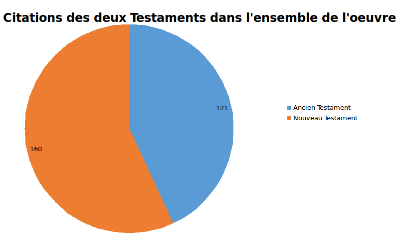 |
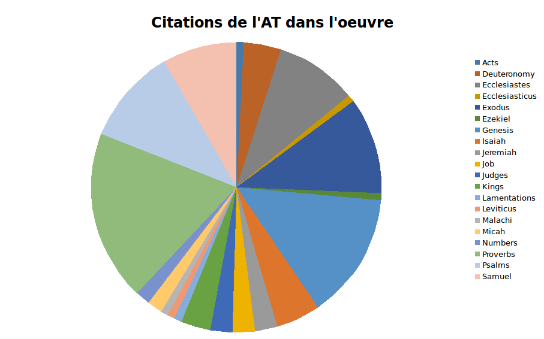 |
||||||||||||||||||||||||
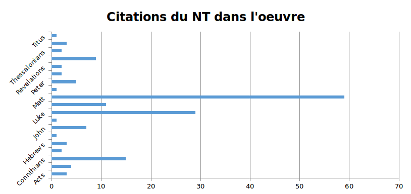 |
|||||||||||||||||||||||||
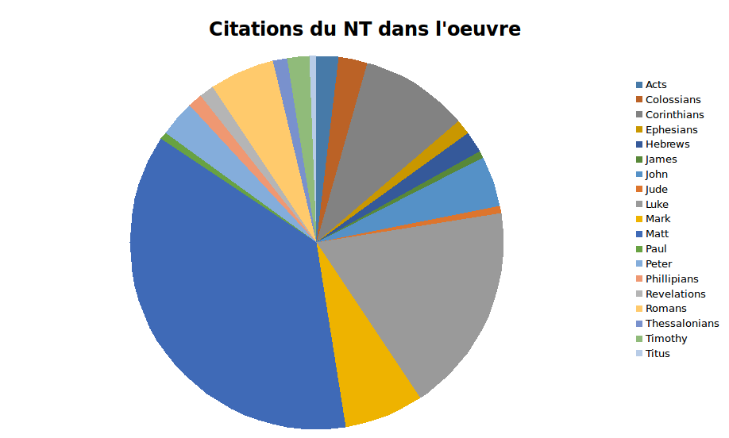 |
|||||||||||||||||||||||||
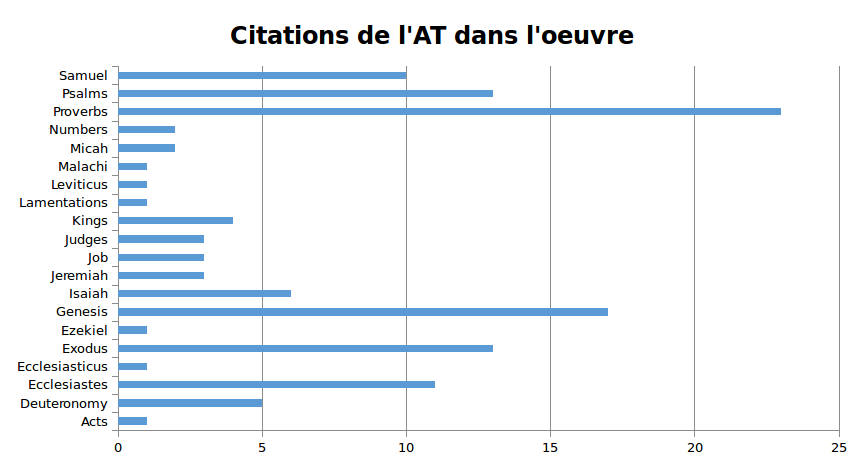
| PERIODIQUES | |||||||||||||||||||
| J'ai ici tout d'abord proposé un graphique récapitulatif AT/NT, qui peut être agrandi. | |||||||||||||||||||
| Par ailleurs, je me demande si le format en fromages convient bien pour le détail : j'aurais tendance à trouver plus lisibles les barres horizontales, c'est pourquoi j'ai proposé les deux formats pour les graphiques par Testament. | |||||||||||||||||||
| Périodiques | |||||||||||||||||||
| Deuteronomy | 3 | 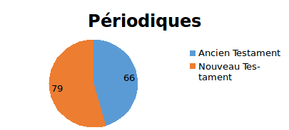 |
|||||||||||||||||
| Ecclesiastes | 7 | ||||||||||||||||||
| Exodus | 6 | ||||||||||||||||||
| Genesis | 8 | ||||||||||||||||||
| Isaiah | 4 | ||||||||||||||||||
| Jeremiah | 3 | ||||||||||||||||||
| Job | 2 | ||||||||||||||||||
| Kings | 2 | ||||||||||||||||||
| Lamentations | 1 | ||||||||||||||||||
| Leviticus | 1 | ||||||||||||||||||
| Micah | 2 | 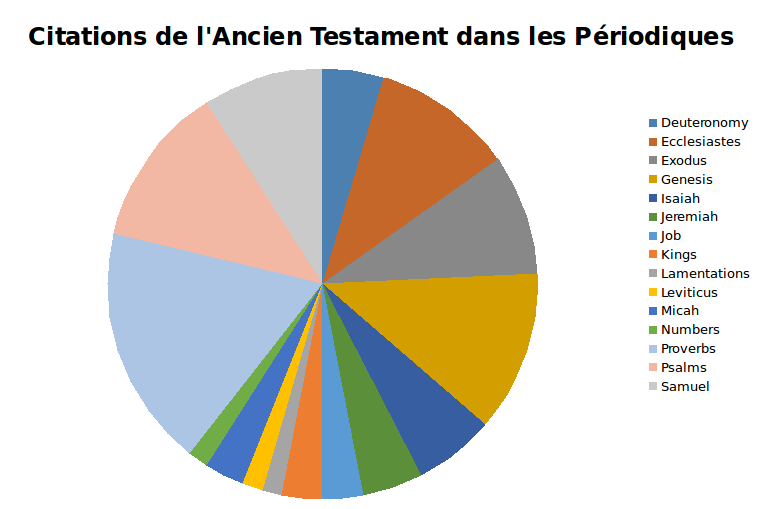 |
|||||||||||||||||
| Numbers | 1 | 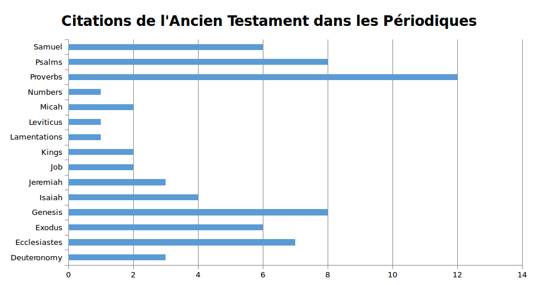 |
|||||||||||||||||
| Proverbs | 12 | ||||||||||||||||||
| Psalms | 8 | ||||||||||||||||||
| Samuel | 6 | ||||||||||||||||||
| Ancien Testament | 66 | ||||||||||||||||||
| Acts | 2 | ||||||||||||||||||
| Colossians | 3 | ||||||||||||||||||
| Corinthians | 10 | ||||||||||||||||||
| Hebrews | 1 | ||||||||||||||||||
| James | 1 | ||||||||||||||||||
| John | 5 | ||||||||||||||||||
| Jude | 1 | ||||||||||||||||||
| Luke | 14 | ||||||||||||||||||
| Mark | 8 | ||||||||||||||||||
| Matt | 19 | ||||||||||||||||||
| Peter | 2 | ||||||||||||||||||
| Revelations | 5 | ||||||||||||||||||
| Romans | 6 | ||||||||||||||||||
| Thessalonians | 1 | ||||||||||||||||||
| Titus | 1 | ||||||||||||||||||
| Nouveau Testament | 79 | ||||||||||||||||||
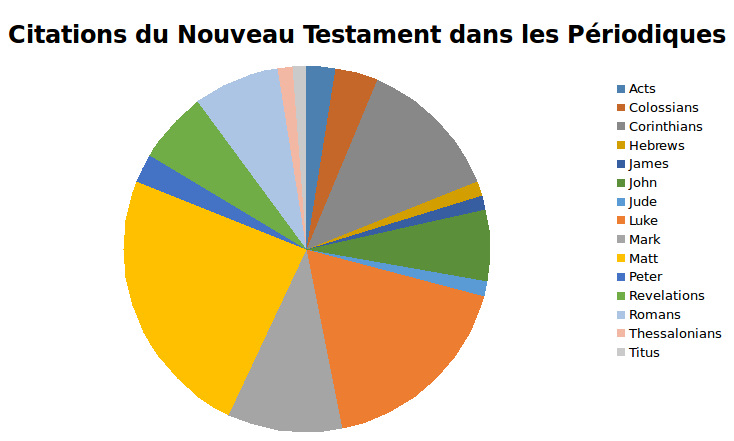 |
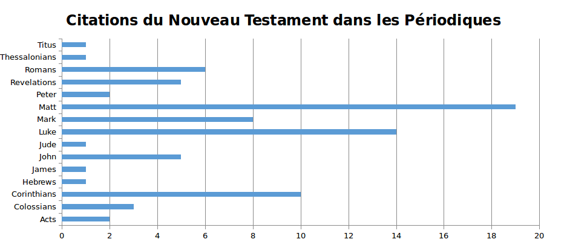 |
||||||||||||||||||
| Essais | ||||||||||||||||||
| J'ai ici à nouveau proposé un graphique récapitulatif AT/NT, qui peut être agrandi. | 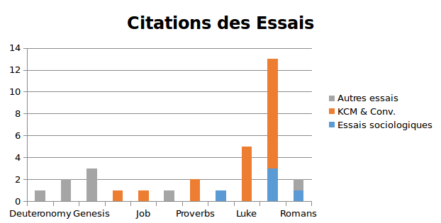 |
|||||||||||||||||
| Plusieurs autres propositions de graphiques en bas de page : le graphique en haut à droite me paraît le plus récapitulatif | ||||||||||||||||||
| Essais | Essais sociologiques | KCM & Conv. | Autres essais | 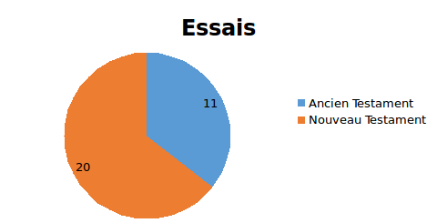 |
||||||||||||||
| Deuteronomy | 1 | 1 | ||||||||||||||||
| Ecclesiastes | ||||||||||||||||||
| Exodus | 2 | 2 | ||||||||||||||||
| Genesis | 3 | 3 | ||||||||||||||||
| Isaiah | 1 | 1 | ||||||||||||||||
| Jeremiah | ||||||||||||||||||
| Job | 1 | 1 | ||||||||||||||||
| Kings | ||||||||||||||||||
| Lamentations | ||||||||||||||||||
| Leviticus | ||||||||||||||||||
| Micah | ||||||||||||||||||
| Numbers | 1 | 1 | ||||||||||||||||
| Proverbs | 2 | 2 | ||||||||||||||||
| Psalms | 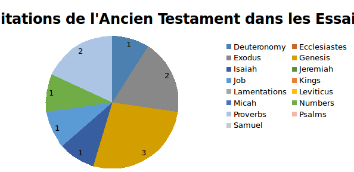 |
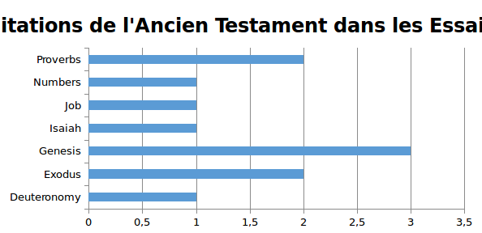 |
||||||||||||||||
| Samuel | ||||||||||||||||||
| Ancien Testament | 11 | |||||||||||||||||
| Acts | ||||||||||||||||||
| Colossians | ||||||||||||||||||
| Corinthians | 1 | 1 | ||||||||||||||||
| Hebrews | ||||||||||||||||||
| James | ||||||||||||||||||
| John | ||||||||||||||||||
| Jude | ||||||||||||||||||
| Luke | 5 | 5 | ||||||||||||||||
| Mark | ||||||||||||||||||
| Matt | 13 | 3 | 10 | |||||||||||||||
| Peter | ||||||||||||||||||
| Revelations | ||||||||||||||||||
| Romans | 1 | 1 | 1 | 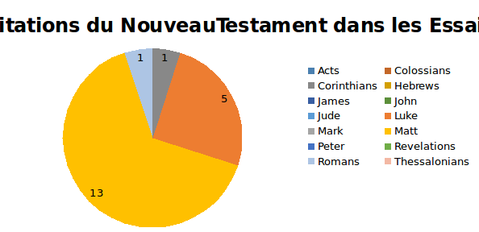 |
||||||||||||||
| Thessalonians | ||||||||||||||||||
| Titus | 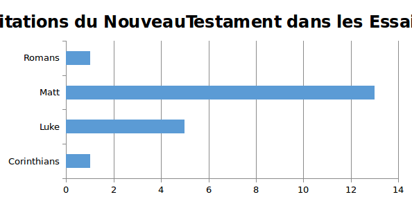 |
|||||||||||||||||
| Nouveau Testament | 20 | |||||||||||||||||
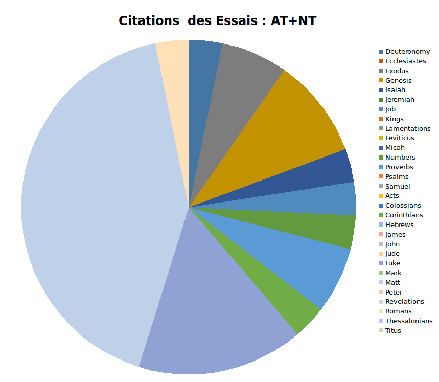 |
||||||||||||||||||
| Essais sociologiques | KCM & Conv. | Autres essais | ||||||||||||||||
| Deuteronomy | 1 | |||||||||||||||||
| Exodus | 2 | |||||||||||||||||
| Genesis | 3 | |||||||||||||||||
| Isaiah | 1 | |||||||||||||||||
| Job | 1 | |||||||||||||||||
| Numbers | 1 | |||||||||||||||||
| Proverbs | 2 | |||||||||||||||||
| Corinthians | 1 | |||||||||||||||||
| Luke | 5 | |||||||||||||||||
| Matt | 3 | 10 | ||||||||||||||||
| Romans | 1 | 1 | ||||||||||||||||
| Essais | ||||||||||||||||||
| Deuteronomy | 1 | |||||||||||||||||
| Ecclesiastes | ||||||||||||||||||
| Exodus | 2 | |||||||||||||||||
| Genesis | 3 | |||||||||||||||||
| Isaiah | 1 | |||||||||||||||||
| Jeremiah | ||||||||||||||||||
| Job | 1 | |||||||||||||||||
| Kings | ||||||||||||||||||
| Lamentations | ||||||||||||||||||
| Leviticus | ||||||||||||||||||
| Micah | ||||||||||||||||||
| Numbers | 1 | |||||||||||||||||
| Proverbs | 2 | |||||||||||||||||
| Psalms | ||||||||||||||||||
| Samuel | ||||||||||||||||||
| Acts | ||||||||||||||||||
| Colossians | ||||||||||||||||||
| Corinthians | 1 | |||||||||||||||||
| Hebrews | ||||||||||||||||||
| James | ||||||||||||||||||
| John | ||||||||||||||||||
| Jude | ||||||||||||||||||
| Luke | 5 | |||||||||||||||||
| Mark | ||||||||||||||||||
| Matt | 13 | |||||||||||||||||
| Peter | ||||||||||||||||||
| Revelations | ||||||||||||||||||
| Romans | 1 | |||||||||||||||||
| Thessalonians | ||||||||||||||||||
| Titus | ||||||||||||||||||
| ROMANS | ||||||||||||||||||
| J'ai ici à nouveau proposé un graphique récapitulatif AT/NT | ||||||||||||||||||
| Romans | ||||||||||||||||||
| Deuteronomy | 2 | 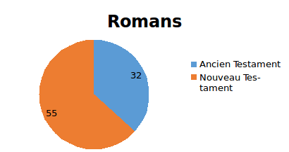 |
||||||||||||||||
| Ecclesiastes | 4 | |||||||||||||||||
| Ecclesiasticus | 1 | |||||||||||||||||
| Exodus | 3 | |||||||||||||||||
| Ezekiel | 1 | |||||||||||||||||
| Genesis | 4 | |||||||||||||||||
| Isaiah | 1 | |||||||||||||||||
| Judges | 3 | |||||||||||||||||
| Kings | 1 | |||||||||||||||||
| Malachi | 1 | |||||||||||||||||
| Proverbs | 5 | |||||||||||||||||
| Psalms | 2 | 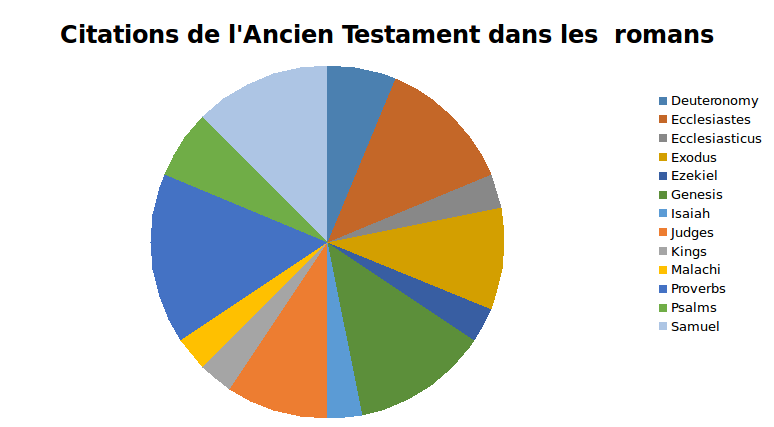 |
||||||||||||||||
| Samuel | 4 | |||||||||||||||||
| Ancien Testament | 32 | |||||||||||||||||
| Acts | 1 | |||||||||||||||||
| Colossians | 1 | 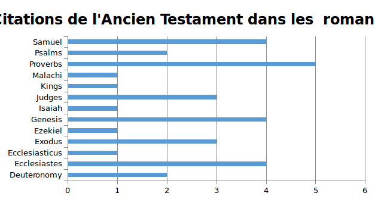 |
||||||||||||||||
| Corinthians | 4 | |||||||||||||||||
| Ephesians | 2 | |||||||||||||||||
| Hebrews | 2 | |||||||||||||||||
| John | 2 | |||||||||||||||||
| Luke | 9 | |||||||||||||||||
| Mark | 1 | |||||||||||||||||
| Matt | 22 | |||||||||||||||||
| Peter | 3 | |||||||||||||||||
| Phillipians | 3 | |||||||||||||||||
| Romans | 2 | |||||||||||||||||
| 1 Tim. | 2 | |||||||||||||||||
| 2 Tim. | 1 | |||||||||||||||||
| Nouveau Testament | 55 | |||||||||||||||||
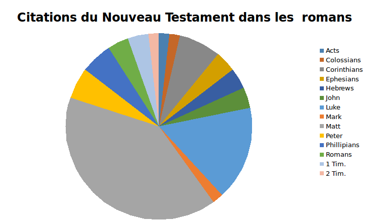 |
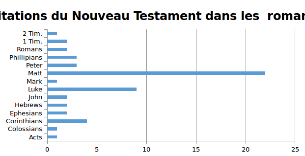 |
|||||||||||||||||